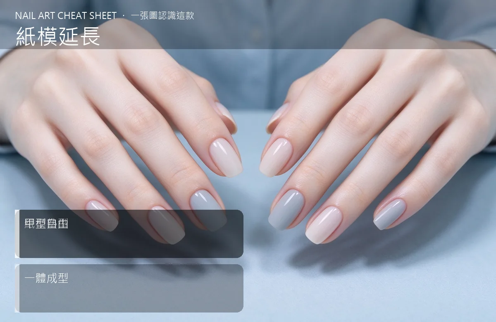

美甲紙模延長是什麼？中階入門攻略
紙模一貼，你的指甲可以「長出」任意長度——這是日系美甲最經典的工法。
紙模延長原理與辨識重點：美甲師不說的紙模墊型
真甲長度不夠時，先把一張鋁製或紙製的「紙模」環繞指尖固定，當成臨時的底座；再把凝膠（或水晶）塗上去、照燈（或自乾）塑形。拆掉紙模後，長出來的假甲跟本甲是連續的一體，比貼甲片更自然。
誰適合做紙模延長？長指甲對號入座
想做自然長甲、又不想要甲片接痕的人；也是日系沙龍最常見的長甲做法。
紙模延長美甲施作步驟：紙模＋凝膠
修型＋前置 → 把紙模貼緊在指尖下方（中心線對齊）→ 上凝膠延長、塑形 → 照燈 → 拆掉紙模 → 修型打磨 → 上色封層。
紙模延長優缺點分析：美甲持久度與傷甲評估
| 優點 | 說明 |
|---|---|
| 甲型自由、厚度自己控制；接痕不明顯，看起來像自己的指甲長長了。 | 是日系流派的招牌，中階就能上手 |
| 缺點 | 說明 |
| 技術門檻高——紙模貼歪、厚度不均，整隻手就歪；新手要練很久。 | 前置與最忌紙模沒貼緊、中間有空隙，結果凝膠流出來沾到皮膚；也別一次取太多膠，會垂、會歪。沒顧好會打折 |

紙模延長新手雷區：甲型自由與常見錯誤
注意：最忌紙模沒貼緊、中間有空隙，結果凝膠流出來沾到皮膚；也別一次取太多膠，會垂、會歪。
紙模延長和其他美甲做法的差別比較
跟「半甲片／全覆蓋甲片」不同：甲片是預製好的模型黏上去；紙模延長是當場塑形，自由度高但技術重。
紙模延長美甲常見問題 FAQ
Q：紙模延長可以做多久？ A：一般留 3–4 週回補；長度視客人需求，5 mm 到 2 cm 都有人做，太長容易斷。
Q：跟甲片比起來哪個比較好？ A：要自然、要矯正，選紙模；要快、要便宜，選甲片。技術到位後紙模質感勝出。